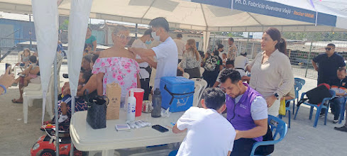
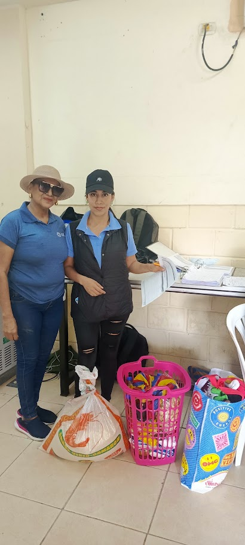
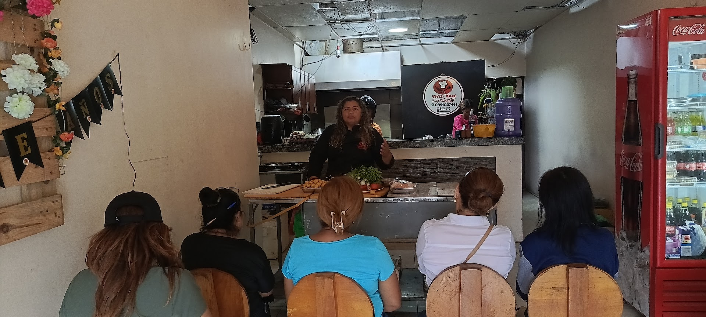

Fundación Transformando Vidas Reciclando Esperanzas
Construyendo esperanza mediante brigadas médicas, ayuda social, bienestar animal, capacitación y desarrollo comunitario en Milagro - Ecuador.
Construyendo esperanza mediante brigadas médicas, ayuda social, bienestar animal, capacitación y desarrollo comunitario en Milagro - Ecuador.
La Fundación Transformando Vidas Reciclando Esperanzas es una organización sin fines de lucro comprometida con el bienestar de las comunidades más vulnerables. Trabajamos promoviendo programas de salud, ayuda social, capacitación y bienestar animal para generar oportunidades, esperanza y una mejor calidad de vida.
Contribuir al desarrollo integral de niños, jóvenes, adultos mayores, personas con discapacidad y familias vulnerables mediante programas de asistencia social, brigadas médicas, capacitación comunitaria y bienestar animal.
Ser una fundación referente por su impacto social y comunitario, impulsando la transformación de vidas mediante la solidaridad, la educación, la salud y el trabajo conjunto con la comunidad.

Apoyamos a niños, jóvenes, adultos mayores y personas con discapacidad mediante programas de salud, brigadas médicas y acompañamiento social.

Entregamos alimentos, ropa, ayudas técnicas, insumos y apoyo humanitario a familias vulnerables.

Fortalecemos habilidades, liderazgo y oportunidades de crecimiento mediante talleres y programas de desarrollo comunitario.